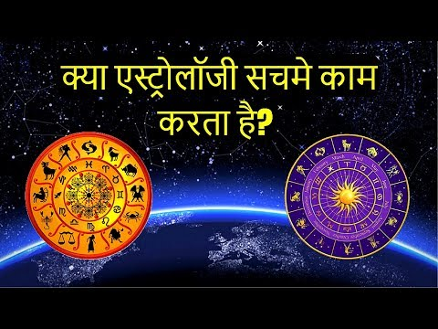

Astrology
Does Astrology Work - Sadhguru's Talks - Spiritual Life
Can you really predict your future using astrology? Sadhguru explains the mechanics behind Indian astrology and the pitfalls of trying to find out what will happen tomorrow.

Astrology
Does Astrology Really Work? || (With Experiments and Tests)
This video we will seek answer to the age old question; is Astrology real? Is astrology a myth or reality? We have been misguided a lot by since we are kids into believing various parapsychology and pseudo scientific stuff.
Astrology
Change Your ASTROLOGY PREDICTION By BK Shivani (Hindi)
BK Shivani clarifies that predictions are a science, a probability of planetary influences on our sanskars. By working on our sanskars we can create a reality of our choice. Our inner power is stronger than all other energies.